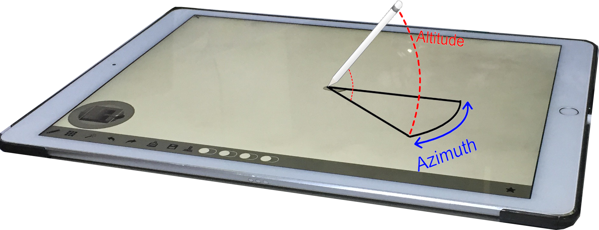

To use this application, you need to have an iPad Pro which support to use Apple Pencil.
When you’re working with Apple Pencil, you can orientate it in three dimensions. Up and down direction is called altitude, while side-to-side is called azimuth:
